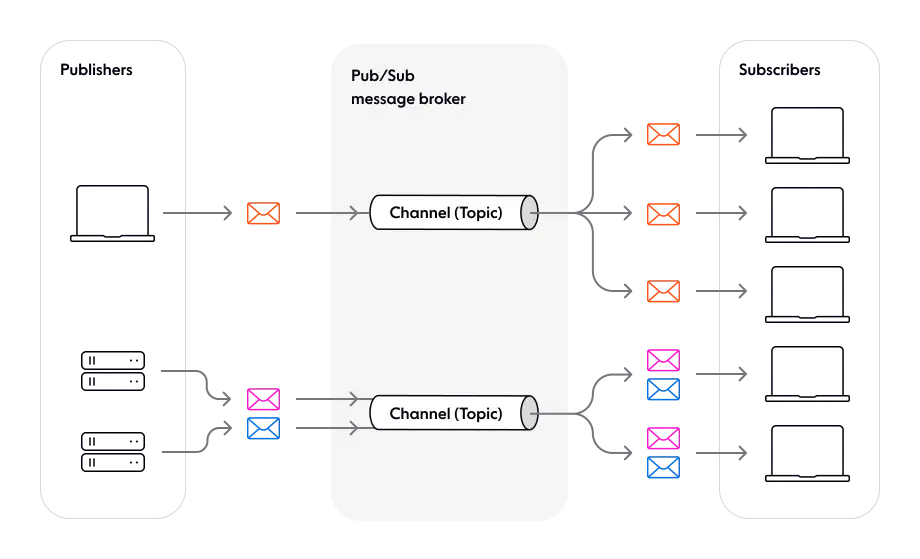
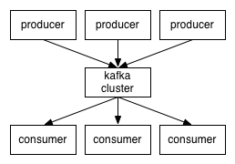
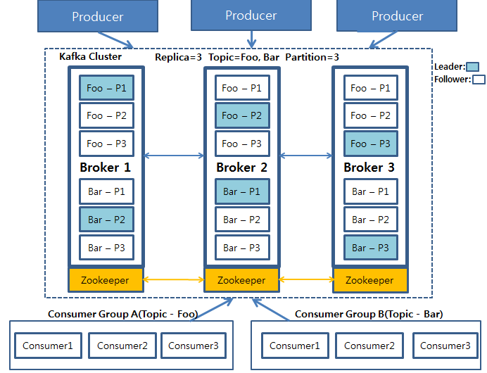

6.3 아파치 카프카 (Apache Kafka)#
카프카는 링크드인에서 개발해 아파치 오픈소스로 등록되었습니다. 이후 링크드인에서 카프카를 개발한 몇몇 엔지니어들이 컨플루언트(Confluent, Inc.)를 창립해 지금까지 카프카를 발전시키고 있습니다. 카프카 스트림즈는 카프카 기능의 일부로 스트림 프로세싱을 위한 경량 라이브러리입니다. 스파크나 플링크보다 강력하진 않지만 *Exactly-once의 이벤트 처리를 보장합니다. 다른 스트림 프로세서들이 실행 프레임워크인 것에 비해 사용이 쉽다는 이점이 있습니다.
아파치 카프카는 분산 스트리밍 플랫폼
데이터 파이프 라인을 만들 때 주로 사용되는 오픈소스 솔루션
대용량의 실시간 로그처리에 특화되어 있는 솔루션
데이터를 유실없이 안전하게 전달하는 것이 주목적인 메세지 시스템
Kafka 주 특징#
*pub/sub model
Publish/Subcribe 구조는 분산 시스템에서 서로 다른 컴포넌트 또는 서비스 간의 비동기 통신을 위해 사용되는 아키텍처 디자인 패턴입니다.
pub/sub는 분리된 각 구성요소가 서로의 identity를 인식하지 않고 broker에 메시지를 전달하는 것이 핵심입니다.

source: (https://ably.com/topic/pub-sub)
Kafka는 위에서 말한 것과 같이 Publish/Subscribe (발행/구독) 모델 구조를 가지고 있습니다.

고가용성(High availability) 및 확장성(Scalability): 카프카는 클러스터로서 작동하므로 Falut-tolerant한 고가용성 서비스를 제공하고 분산 처리를 통해 빠른 데이터 처리를 가능하게 합니다. 또한, 서버를 수평적으로 늘려 안정성 및 성능을 향상시키는 Scale-out이 가능합니다.
디스크 순차 저장 및 처리(Sequential Store and Process in Disk): 메시지를 메모리 큐에 적재하는 기존 메시지 시스템과 다르게 카프카는 메시지를 디스크에 순차적으로 저장합니다. 그럼으로서 아래와 같은 두가지 이점을 얻습니다.
서버에 장애가 나도 메시지가 디스크에 저장되어 있으므로 유실되지 않음
디스크에 순차적으로 저장되어 있으므로 디스크 I/O가 줄어들어 성능이 빨라짐
❓왜 디스크에 저장해도 속도가 빨라지나요?
Kafka가 Disk I/O를 사용하더라도 속도가 빠른 이유는 최적화 기술이 결합되어 있기 때문입니다.1. Disk에 데이터를 순차적으로 쓰기때문에 랜덤 액세스가 줄어듦 2. Kafka는 데이터를 배치로 처리함. 작은 메세지를 일괄적으로 처리하여 Disk I/O를 줄임 3. Disk에서 데이터를 읽을 때 메모리 캐시를 사용함 4. 프로듀서와 컨슈머의 버퍼링을 사용하여 빠른 데이터 전송을 제공함
분산 처리(Distributed Processing): 카프카는 Partition이라는 개념을 통해 여러개의 파티션을 서버들에 분산시켜 나누어 처리합니다.
Kafka 구조 및 구성요소#
Kafka Producer: 프로듀서는 하나 이상의 카프카 토픽에 레코드를 쓰는 프로세스
Kafka Cluster: 카프카 서버로 이루어진 클러스터를 말합니다. 카프카 클러스터를 이루는 요소는 아래와 같다.
Kafka Broker
카프카 플랫폼을 실행하는 서버.
브로커는 여러 개의 파티션을 가질 수 있고, 각 파티션은 여러개의 복제본을 가질 수 있습니다.
Kafka Topic
클러스터에 데이터를 관리할 때 그 기준이 되는 개념. 토픽은 카프카 클러스터에서 여러개 만들 수 있고 하나의 토픽은 1개 이상의 파티션으로 구성되어 있습니다.
Zookeeper
주키퍼는 카프카가 브로커를 관리하는 데 사용하는 분산 코디네이션 시스템입니다.
클러스터의 Leader를 발탁하는 방식도 주키퍼가 제공하는 기능을 이용합니다.
Leader, Follower
복제된 파티션 중 하나의 리더가 선출되어 모든 읽기, 쓰기 연산을 담당합니다.
리더를 제외한 나머지는 팔로워가 되어 단순히 리더의 데이터를 복제하는 역할만 수행합니다.
리더가 죽었을 때, 팔로워중 하나가 리더로 선출되어 메시지를 처리합니다.
Consumer Group
컨슈머는 하나 이상의 카프카 토픽을 구독하고 해당 토픽에 있는 레코드를 읽는 주체입니다.
컨슈머는 그룹으로서 데이터를 처리하며 컨슈머 그룹 안에 컨슈머 수만큼 파티션의 데이터를 분산처리하게 됩니다.

해당 그림은 Producer가 데이터를 카프카에 적재하고 있으며 저장된 데이터를 Consumer Group A와 B가 각각 자신이 처리해야 할 Topic Foo와 Bar를 가져오는 그림입니다.
replica를 3으로 설정해 3개의 broker를 볼 수 있으며, Foo와 Bar는 각 3개의 파티션으로 나뉘어져 있고, 각 파티션들은 3개의 복제본으로 복제됩니다. 3개의 복제본 중에 하나의 리더가 선출되고, 이 리더가 모든 연산을 담당합니다.
중요한 것은 이 파티션들은 운영 도중 그 수를 늘릴 수 있지만 절대 줄일 수 없기 때문에 파티션을 늘리는 것은 신중하게 고려해야 할 문제가 됩니다.
(보통의 경우에는 파티션 개수와 Consumer 개수를 맞춰주는 것을 권장하지만, 실제 메시지가 쌓이는 속도보다 처리하는 속도가 빠르다면 파티션개수 ≥ 컨슈머 개수 로 설정하는 것도 나쁘지 않습니다.😊)